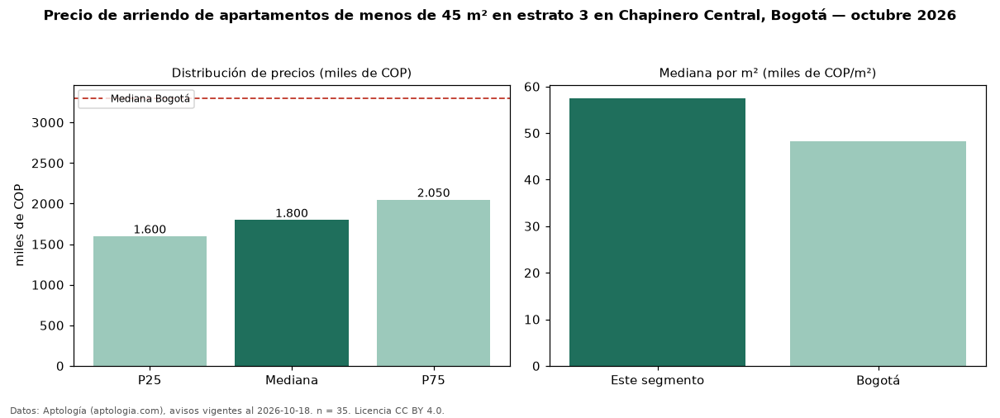

Precio de arriendo de apartamentos de menos de 45 m² en estrato 3 en Chapinero Central, Bogotá — octubre 2026
En Chapinero Central (localidad de Chapinero), Bogotá, la mediana de canon mensual de apartamentos de menos de 45 m² en estrato 3 es COP 1,80 millones, según 35 avisos vigentes. Eso es 9 % menos que la mediana de los apartamentos en estrato 3 en arriendo de Chapinero Central (COP 1,98 millones, n = 53); este segmento reúne el 66 % de esos avisos. Por metro cuadrado, la mediana es COP 57.500/m² al mes (n = 33), 10 % por encima de los apartamentos en estrato 3 en arriendo de Chapinero Central (COP 52.222/m²). El área mediana anunciada es 30 m². El segmento con más oferta es el de 1 habitación (33 avisos, mediana COP 1,80 millones). La administración mediana declarada es COP 285.000 al mes (n = 15), aparte del canon. La mediana de todos los apartamentos en arriendo de Bogotá es COP 3,30 millones (−45 % de diferencia). 27 % de los avisos con el dato declara parqueadero. Datos: Aptología (aptologia.com), CC BY 4.0 — https://www.aptologia.com/arriendo/bogota/chapinero-central. Archivos: PDF, CSV con las cifras y gráfica PNG.

| Avisos únicos | 35 |
|---|---|
| Percentil 25 | COP 1.600.000 |
| Mediana | COP 1.800.000 |
| Percentil 75 | COP 2.050.000 |
| Mediana por m² | COP 57.500 |
Fuente: avisos vigentes de portales inmobiliarios recopilados por Aptología, deduplicados (mínimo 30 avisos únicos por celda). Precios pedidos, no cerrados. Fecha: 2026-10-18.